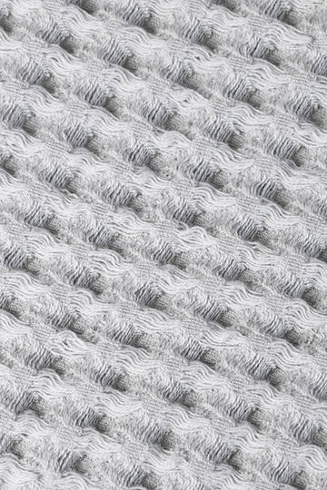
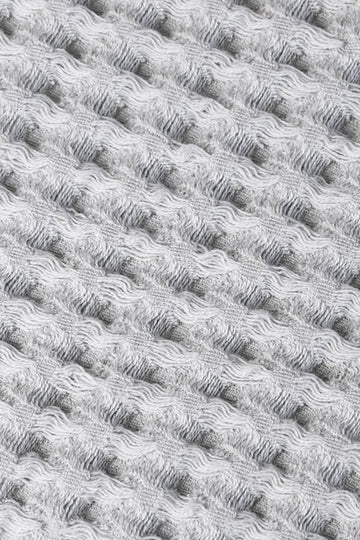

POWERFUL ANTI -MICROBIAL FORMULAR
Odor Free. Worry Free.
Odor Free. Worry Free.
No Annoying Bacteria.
We've all been there .when we had to usage, a
dirty towel on a clean body but basic,
perpetually soggy towels are breeding grounds
for microbe’s .the powerful anti-microbial Ag+
Ti fibers kill fungus, mold and as much as 650
types of bacteria effectively
 
